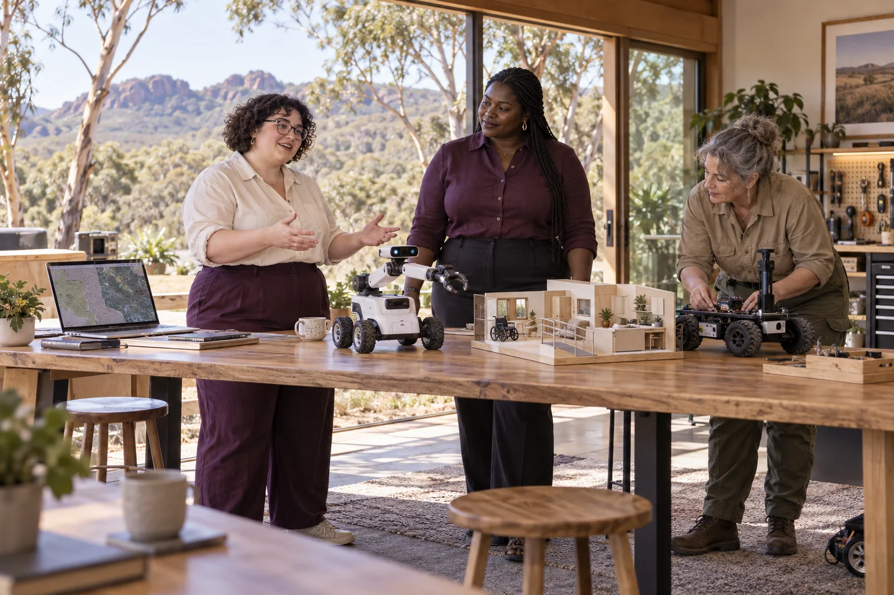

Choose the smallest useful task
Start with a missed care handover, warehouse bottleneck, observation question or story scene. Define who benefits and how they currently manage.

Use models, software and machines to make a specific human task easier, safer or better understood. This broad strand connects care and hospitality with creative worlds, scientific observation and ambitious infrastructure. The twenty original suggestions are different starting points, not one product roadmap.
Follow the connections. Choose your direction.
Use models, software and machines to make a specific human task easier, safer or better understood. This broad strand connects care and hospitality with creative worlds, scientific observation and ambitious infrastructure. The twenty original suggestions are different starting points, not one product roadmap.
A simulation lets a team examine an assumption before committing to equipment or construction. A robot becomes useful when it performs a defined task reliably within a service people actually want. The practical opportunity is to choose a user, a task and a result that can be checked. Women bring expertise from care, trades, science, logistics and everyday life; they should set the problem and control important product decisions, not merely appear in a demonstration.
Start with a missed care handover, warehouse bottleneck, observation question or story scene. Define who benefits and how they currently manage.
Compare a paper process, existing tool or simple baseline with the proposed model or machine. Include setup, maintenance and the human work around it.
Invite users and qualified specialists to examine results. Record failures and decide whether the next step is another test, a paid service or a stop.
Give older people more control over everyday support, while making the work of care teams easier.
Practical pilot
Build disability support around a person's goals, access needs and authority over their own life.
Practical pilot
Explore compact city accommodation that makes short stays dignified, accessible and easy to run.
Engineering development
Design adaptable accommodation workflows for public-health disruptions and supported isolation.
Practical pilot
Turn fleet cleaning into a measurable service for workers, vehicles and water use.
Practical pilot
Help cold stores keep food traceable, accessible and moving through the right temperature conditions.
Practical pilot
Test the assumptions behind an island spaceport before proposing a site or construction programme.
Speculative concept
Examine whether an under-ocean fast-transport vision has a useful, testable starting point.
Speculative concept
Use shared fictional worlds to explore real choices about future lives, communities and technology.
Practical pilot
Make space-weather observations easier to compare, explain and connect to operational decisions.
Research frontier
Help observers turn asteroid measurements into clear, traceable understanding of objects near Earth.
Practical pilot
Work backwards from a useful observation to the smallest satellite network that could provide it.
Research frontier
Turn off-world resource ambitions into material-handling experiments with clear terrestrial value.
Research frontier
Improve hazard understanding while clearly separating earthquake prediction from monitoring and preparedness.
Research frontier
Help teams understand where quantum computing might fit, using honest comparisons with conventional methods.
Research frontier
Connect local decisions through transparent agreements, shared learning and accountable representation.
Practical pilot
Build remote-handling capability for difficult environments without claiming access to Fukushima operations.
Engineering development
Break the underground-city vision into inspectable systems, human needs and decisions that can be tested.
Speculative concept
Reinterpret the archive's city-scale Live Aid ambition as a practical network of locally led creative events.
Practical pilot
Explore fair audience participation that celebrates art without turning popularity into the only measure of value.
Practical pilot
Begin with women's own experiences across bodies, ages, cultures and places. Invite disagreement and choose a practical change together.
Create a women-led design brief →

A browser simulation explores connections between island ecology, services, movement and everyday life.
Design a possible network of satellites using interactive orbit, sensor, launch and communications tools.
Explore shared local computing alongside sustainable employment, training, media, making and cultural collaboration.
Original category and twenty titles from 500 Queens VC NEW Long, slide 15. This expanded pathway is a proposed interpretation of the September 2026 plan, with practical services distinguished from research and speculative infrastructure.